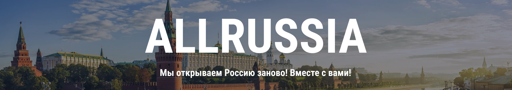

Аннотация проекта
Суть проекта
Команда проекта AllRussia.info занимается разработкой веб-сайта для заказчика извне московского политеха. Сайт из себя представляет новостной портал и энциклопедию о России и арабском регионе, чтобы способствовать продвижению культурного обмена.
Цель проекта
Целью проекта является создание многоязычного новостного портала, предоставляющего объективную информацию о России и арабском мире, способствующего продвижению культурного обмена и взаимопонимания между двумя регионами. Сайт включает в себя: клиентскую часть, серверную часть (административная панель, база данных, система менеджмента), дизайн веб-сайта, документацию по использованию.
Заказчик проекта
Нашим заказчиком является организация, для которой мы разрабатываем веб- сайт в соответствии с требованиями технического задания и пожеланиями заказчика.
Заказчик проекта: Муса Адель Жорж
О проекте

Цели проекта
- Обеспечить доступ к объективной, актуальной и многоязычной информации о событиях в России и арабском мире.
- Сформировать позитивную и достоверную информационную повестку, основанную на фактах, а не стереотипах.
- Содействовать развитию культурного и информационного обмена между странами.
- Создать медиаплатформу, способную стать авторитетным источником для широкой зарубежной аудитории, прежде всего в арабском регионе.
Этапы реализации
- Анализ и постановка задач — на начальном этапе мы определили цели проекта, целевую аудиторию и ключевые требования к продукту.
- Проектирование интерфейса и архитектуры — разработали макеты, структуру сайта и техническое задание.
- Разработка дизайна — создали визуальный стиль, адаптированный под целевую аудиторию, с акцентом на удобство восприятия.
- Frontend- и backend-разработка — реализовали внешний интерфейс и внутреннюю логику системы, обеспечили работу всех функций.
- Тестирование и отладка — проверили продукт на ошибки, адаптировали под разные устройства и браузеры.
- Сдача и доработка — представили рабочую версию заказчику, учли его комментарии и доработали продукт до финального состояния.
Участники проекта
Куратор проекта
Никулина Анна Константиновна
Руководитель проекта
Шарипова Олеся Ирековна 221-376
Подгруппа клиентской разработки
Магеррамли Акрам Мамед оглы 241-132 (Руководитель подгруппы)
Валишин Динис Габидуллович 241-132
Гайворонский Семён Сергеевич 241-321
Колупаева Светлана Михайловна 241-131
Крутиков Фёдор Маркович 241-131
Крылов Родион Антонович 241-132
Лисьева Александра Владимировна 241-131
Мастеров Илья Игоревич 241-132
Мачихин Дмитрий Александрович 241-132
Мокшин Кирилл Александрович 241-132
Обидов Эрадж Фариддунович 241-131
Оразбаев Эльдар Зарманбетович 241-132
Фай Адама 241-131
Агамирян Рубик Арцрунович 221-322
Акобян Самвел Оганнесович 211-323
Грибков Артём Дмитриевич 221-634
Гунин Артём Андреевич 221-353
Караев Эмиль Рафаилович 221-321
Кишиев Сеймур Афганович 221-353
Кондратьев Павел Евгеньевич 221-321
Конопский Кирилл Сергеевич 221-361
Махлышев Матвей Дмитриевич 211-722
Меньшенин Алексей Евгеньевич 211-351
Морозов Иван Константинович 221-353
Саканян Армен Робертович 231-321
Шихалев Дмитрий Андреевич 221-331
Подгруппа серверной разработки
Голубев Егор Алексеевич 221-371 (Руководитель подгруппы)
Юрков Артем Геннадиевич 221-371
Подгруппа дизайна
Шарипова Олеся Ирековна 221-376 (Руководитель подгруппы)
Нерсесян Сюзанна Игоревна 241-338
Конкин Андрей Дмитриевич 231-334
Новиков Александр Денисович 231-336
Павленко Ангелина Юрьевна 231-335
Щепин Даниил Максимович 221-634
Журнал проекта
Так как наша команда состоит из 34 человек, то удобней всего просматривать деятельность по дорожной карте.
Дорожная карта